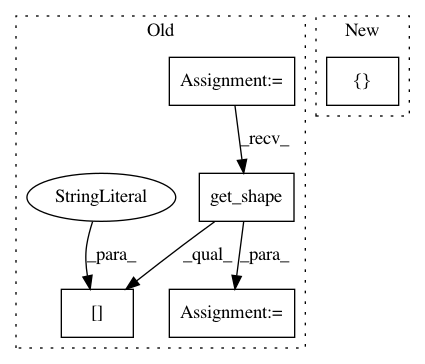

037e592f2ba7c18b71bc9b39f84de11af0252863,keras/backend/tensorflow_backend.py,,flatten,#Any#,289
Before Change
"""Turn a n-D tensor into a 2D tensor where
the first dimension is conserved.
"""
x = tf.reshape(x, [-1, np.prod(x.get_shape()[1:].as_list())])
return x
def expand_dims(x, dim=-1):
After Change
def flatten(x):
return tf.reshape(x, [-1])
def batch_flatten(x):
In pattern: SUPERPATTERN
Frequency: 3
Non-data size: 5
Instances
Project Name: keras-team/keras
Commit Name: 037e592f2ba7c18b71bc9b39f84de11af0252863
Time: 2016-01-08
Author: francois.chollet@gmail.com
File Name: keras/backend/tensorflow_backend.py
Class Name:
Method Name: flatten
Project Name: NifTK/NiftyNet
Commit Name: 6f405851fcb3be013441810be9a7edbbc04fd2a3
Time: 2018-05-15
Author: d.shakir@ucl.ac.uk
File Name: niftynet/layer/loss_segmentation.py
Class Name: LossFunction
Method Name: layer_op
Project Name: NifTK/NiftyNet
Commit Name: 5b5ea7b5d864e53894f5342f19becfba8f8035e5
Time: 2017-12-18
Author: wenqi.li@ucl.ac.uk
File Name: niftynet/network/interventional_dense_net.py
Class Name: INetDense
Method Name: layer_op